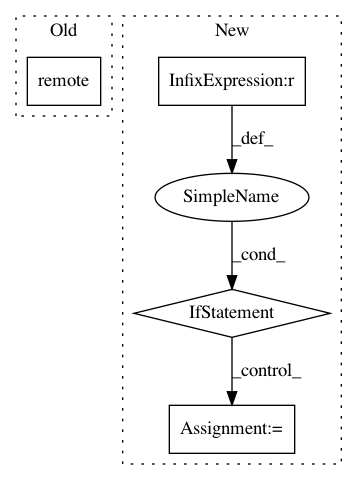

7c0200c93b88898507dbafcb2d92314d0dbcd451,python/ray/serve/master.py,ServeMaster,create_endpoint,#ServeMaster#Any#Any#Any#,254
Before Change
route, endpoint_name, methods=methods)
[http_proxy] = self.get_http_proxy()
await http_proxy.set_route_table.remote(
self.route_table.list_service(
include_methods=True, include_headless=False))
After Change
// based on its name.
// TODO(edoakes): we should probably just store routes and endpoints
// separately.
if route is None:
route = endpoint
// TODO(edoakes): move this to client side.
err_prefix = "Cannot create endpoint."
if route in self.routes:
if self.routes[route] == (endpoint, methods):
return
In pattern: SUPERPATTERN
Frequency: 3
Non-data size: 4
Instances
Project Name: ray-project/ray
Commit Name: 7c0200c93b88898507dbafcb2d92314d0dbcd451
Time: 2020-04-28
Author: ed.nmi.oakes@gmail.com
File Name: python/ray/serve/master.py
Class Name: ServeMaster
Method Name: create_endpoint
Project Name: ray-project/ray
Commit Name: c4e273920f517b18c99fbabca49135dd6e30e683
Time: 2020-12-22
Author: me@barakmich.com
File Name: python/ray/experimental/client/api.py
Class Name: ClientAPI
Method Name: remote
Project Name: ray-project/ray
Commit Name: 80f6dd16b2a7f5e90ff882751c37b7f2e02bd147
Time: 2020-12-20
Author: me@barakmich.com
File Name: python/ray/experimental/client/server/server.py
Class Name: RayletServicer
Method Name: _schedule_method